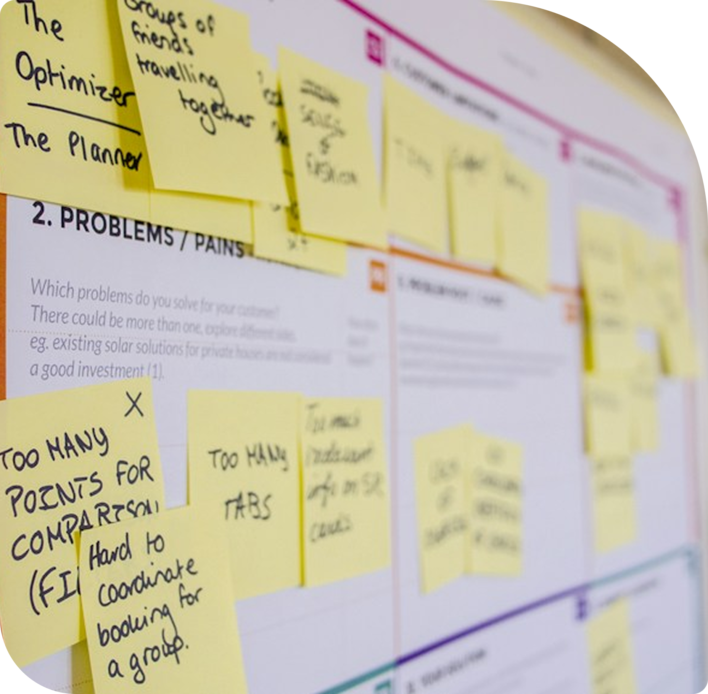
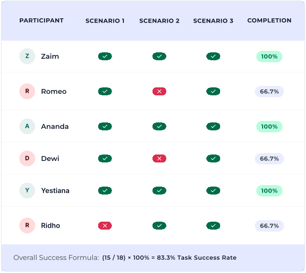

Pernah sih, waktu sinyal internet lagi jelek, ada beberapa konten yang lama kebuka. Tapi info dasarnya tetap bisa dilihat, jadi nggak terlalu bermasalah.
Kiki AmarlisMother of 2 children
UI/UX Designer · UX Researcher

Stunting remains a critical public health challenge, largely driven by inadequate nutrition, poor sanitation, and a lack of consistent growth tracking during a child's foundational years. To address this pressing issue, I designed Genpro Apps, a comprehensive mobile application concept dedicated to stunting prevention. The primary goal of this project was to bridge the information gap between parents, local healthcare workers, and vital health data. By combining precise anthropometry monitoring with proactive sanitation education, Genpro Apps serves as an accessible digital ecosystem that empowers users to take immediate, informed measures to ensure healthy child development.


Teamwork Credit
Great design starts with a shared understanding. Working closely with my team, we dive deep into user needs and pain points before sketching a single screen. We brainstorm ideas together, ensuring that our research translates into a solid, user-centered digital solution.

Great design starts with a shared understanding. Working closely with my team, we dive deep into user needs and pain points before sketching a single screen. We brainstorm ideas together, ensuring that our research translates into a solid, user-centered digital solution.

Usability Testing
We conducted task-based usability testing with 6 participants (mothers and health cadres) using Task Success Rate (TSR) and qualitative observation to identify friction points and validate core flows.

Scenario Breakdown
The Matrix

I provide end-to-end digital solutions, from wireframing in Figma
to fully developed websites. Let's create
an engaging digital product that perfectly aligns with your business
goals.